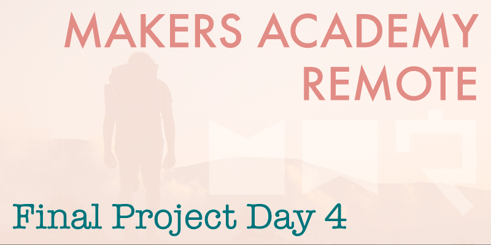

Today we began to rebuild yesterday's spiked code into a properly test driven project. We've progressed noticeably slower today than we did yesterday during spiking, due to the need to test each feature, but of course testing will pay dividends later in the project, and after so much TDD training we wouldn't dream of developing in any other way.
Clean code
After much planning and spiking earlier in the week, it felt good to actually begin developing our code following the best practices we've been taught throughout the course. It's interesting that the virtues of coding best practices and TDD have been drummed in to us to such an extent, that when spiking none of us felt good about the code, it all felt very hacked together, and dare I say it 'dirty'. By contrast building a project in a test driven manner, committing code to GitHub early and often, feels nice and 'clean'. I'd much rather present an unfinished product upon graduation that's been cleanly developed in a test driven manner, than a polished product that's been hacked together.
More fighting (sigh)
Unfortunately today our team has endured our fair share of debating again, similarly to yesterday, which in my opinion has been very unproductive and has negatively affected the group morale. Of course in a group not everybody will always get on well, but hopefully tomorrow any ill feelings will have dissipated, and we can progress together to produce the best final project we can. I believe that we all share the same core values, and differences in personality types are what I believe have caused much of the disagreement within our group over the past couple of days. While I think that these disagreements are a real shame, and a waste of time, the reality is that sometimes people just don't get on well together, and learning to work together in these situations is as important a skill as any other.
I do however believe that we're still on track to produce a high quality product by the end of this two week process. We now have seven days remaining in which to develop the project, and with a solid code base to work from I now expect the features to be added quickly during the coming days.